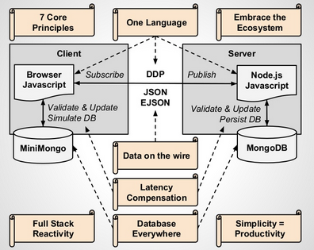

class: center, middle  # Erfahrungen mit Meteor --- # Mein Hintergrund - Hintergrund High Performance Computing mit C++ in der Bioinformatik - MPI und OpenMP Parallelisierungen - Entwicklung von Frameworks für Simulationen - Parallelisierungen von Simulations Frameworks - Seit ca. 3 Jahren Web Applikationen mit Fullstack Javascript: - Arbeit an der ETH am Lehrstuhl für Informationstechnologie und Ausbildung - Software zum Übungsbetrieb Managment: https://pele.ethz.ch - Content Managment and Delivery Plattform für Distribution von online Lernmaterialien: https://et.ethz.ch --- # Fullstack Javascript the old way ;) .center[] --- # Meteor <div class="col-md-6"> <ul> <li>One Language</li> <li>Database everywhere</li> <li>Data on the wire</li> <li>Latency Compensation</li> <li>Full Stack Reactivity</li> <li>Open Ecosystem</li> <li>Simplicity = Productivity</li> </ul> </div> <div class="col-md-6">  </div> --- # Playground 1. Meteor installieren: - Linux/Mac: `curl https://install.meteor.com/ | sh` - Windows: https://www.meteor.com/install 2. Clone Repo: https://github.com/DavidSichau/BrainFood <img src="http://api.qrserver.com/v1/create-qr-code/?color=000000&bgcolor=FFFFFF&data=http%3A%2F%2Fgit.io%2FvqVsg&qzone=1&margin=0&size=250x250&ecc=L" alt="qr code" /> 3. In Ordner `Examinator` wechseln 4. Run `meteor` 5. Open http://localhost:3000 6. Ask play and enjoy 7. Live: http://examinator.meteor.com/ --- # Examinator ## Struktur - Client Code unter `client` - Server Code unter `server` - Sonstiger Code wird sowohl auf Server als auch auf Client ausgeführt ## Daten - `lib/collections` Collections - `server/publications.js` Daten Publikation - `client/templates` Blace Templates ## Packages - `.meteor/packages` Auflistung der verwendeten Packages - `aldeed:autoform` Automatische Generation von Forms - `aldeed:collection2` Definition der Datenstruktur von Collections --- # Erfahrungen - inzwischen zwei Applikationen mit meteor umgesetzt - eine seit 2 Monaten im produktivem Einsatz # Vorteile - Sehr schnelle Entwicklung - Deutlich geringere Fehler Häufigkeit - Im Moment sehr aktive Community # Nachteile - Noch sehr junges Framework - Qualität von Packages sehr unterschiedlich - Mini Mongo ist nicht ganz identisch zu MongoDB --- .center[ #Informationen ##RTFM [docs.meteor.com](http://docs.meteor.com) ## Bücher [discovermeteor.com](http://www.discovermeteor.com) ## Blogs [dweldon.silvrback.com](http://dweldon.silvrback.com) [crater.io](http://www.crater.io) ##Packages [https://atmospherejs.com/](https://atmospherejs.com/) ##Guter Start [http://meteorpack.com/](http://meteorpack.com/) ]